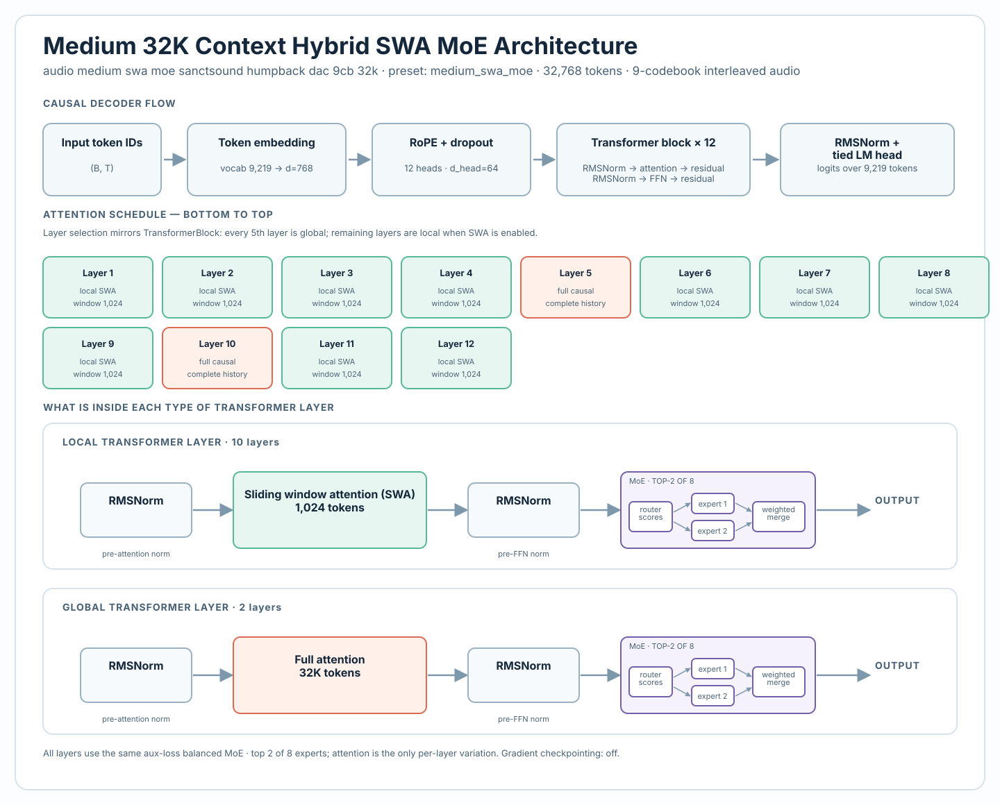
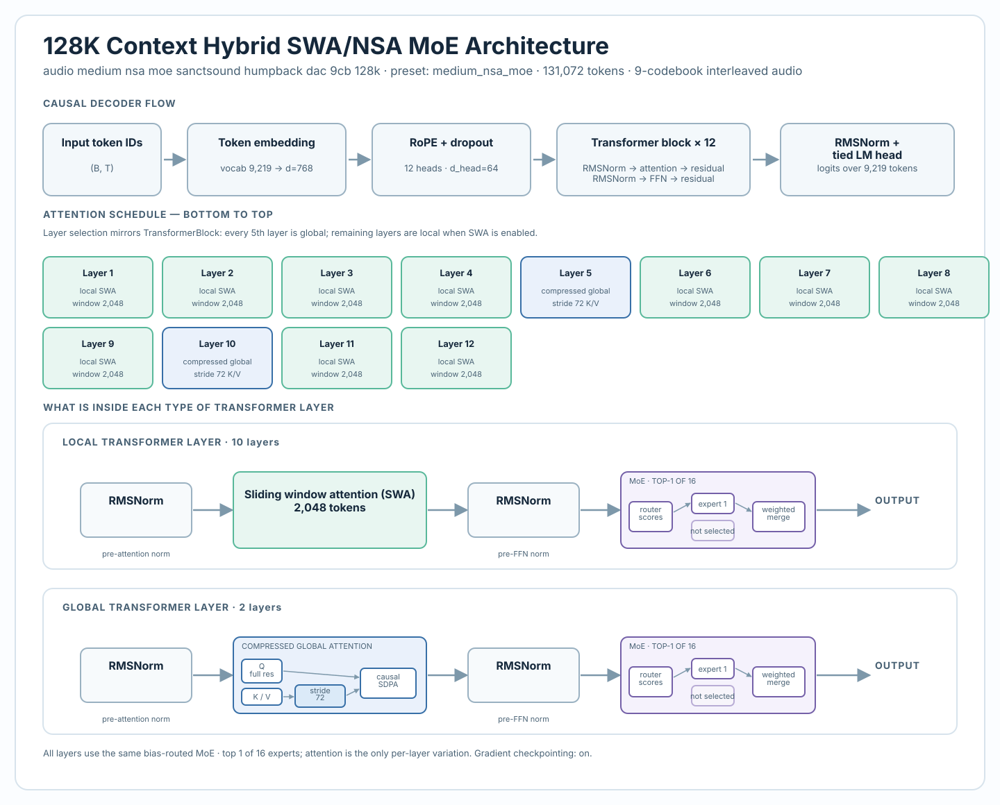

What both architectures share
Every released model is an autoregressive decoder over interleaved, nine-codebook DAC tokens. Input tokens pass through a learned embedding, rotary positional embeddings (RoPE), repeated pre-norm transformer blocks, a final RMSNorm, and a language-model head tied to the input embedding weights.
Every transformer block also uses a Mixture of Experts (MoE) feed-forward path. A router scores experts for each token, sends the token to a small selected subset, and combines their outputs. This adds conditional feed-forward capacity without evaluating every expert for every token.
Hybrid SWA + MoE: periodic full-context refresh
The Hybrid SWA architecture keeps most attention layers local. In those layers, a token attends within a recent sliding window; every fifth layer uses ordinary full causal attention across the available context. The full-attention layers act as periodic refresh points, allowing information to move beyond the local window.
- Local attention: 1,024 tokens in the released 10K Large and 32K Medium models.
- Global schedule: every fifth layer—layers 5, 10, and 15 in the 16-layer 10K model; layers 5 and 10 in the 12-layer 32K model.
- MoE: eight SwiGLU experts per layer with top-2 routing.

This is the simpler of the two long-context strategies. It trades a small number of expensive global layers for many inexpensive local layers, while preserving a direct full-history path at regular intervals.
DeepSeek-style Hybrid NSA + MoE: compressed global context
The 128K model retains local sliding-window attention in most layers but changes its periodic global layers. Rather than forming dense attention over every key and value position, a compressed-global layer keeps full-resolution queries and samples its K/V history at a fixed stride. This is a DeepSeek-inspired sparse-attention design tailored to the nine-codebook token layout.
- Local attention: a 2,048-token sliding window.
- Global schedule: compressed-global layers 5 and 10, with K/V sampled every 72 tokens.
- 128K context: about 1,820 K/V anchors rather than dense K/V attention over 131,072 positions.
- MoE: 16 SwiGLU experts, learned-bias top-1 routing, and weighted merge of selected outputs.

How the two architectures compare
| Design choice | Hybrid SWA + MoE | DeepSeek-style Hybrid NSA + MoE |
|---|---|---|
| Released contexts | 10K Large and 32K Medium | 128K Medium |
| Ordinary layers | 1,024-token sliding-window attention | 2,048-token sliding-window attention |
| Periodic global layers | Dense full causal attention | Full-resolution Q over stride-72 compressed K/V |
| MoE routing | 8 experts, top-2 | 16 experts, learned-bias top-1 |
| Primary tradeoff | Simpler periodic global refresh | Much longer global context under a bounded attention-memory budget |
Neither architecture is a decoder for whale meaning. They are tools for modeling structure in long sequences of audio tokens. The release is intended to make those design choices inspectable and reproducible, so that researchers can compare them, test alternatives, and evaluate their consequences on new data.
What inspection reveals in the 10K Hybrid SWA model
Architecture describes the available pathways; checkpoint inspection helps test how a particular trained model uses them. The released 10K Large checkpoint provides a concrete case study. Its parameter distribution is dominated by the MoE feed-forward paths, while the forward measurement below shows that the periodic global-attention layers can make much larger residual-stream updates than typical local layers.

On one real 4.01-second prompt, the three full-attention refresh layers updated the residual stream by 1.00×, 0.89×, and 0.98× their incoming residual RMS. Typical middle SWA layers measured 0.03×–0.15×; the final local layer measured 0.92×. That is evidence about this checkpoint and prompt, not a general measure of whale-song understanding or an activation claim about the 128K NSA model.

sanctsound_hi01_01_015542.npy (first 3,105 interleaved tokens). For the full evidence and limits, see Inside the Humpback DAC9 Models.Explore and reproduce
The public release includes model checkpoints, the training configurations that generate these diagrams, and code for prompted generation, checkpoint inspection, and weight analysis.